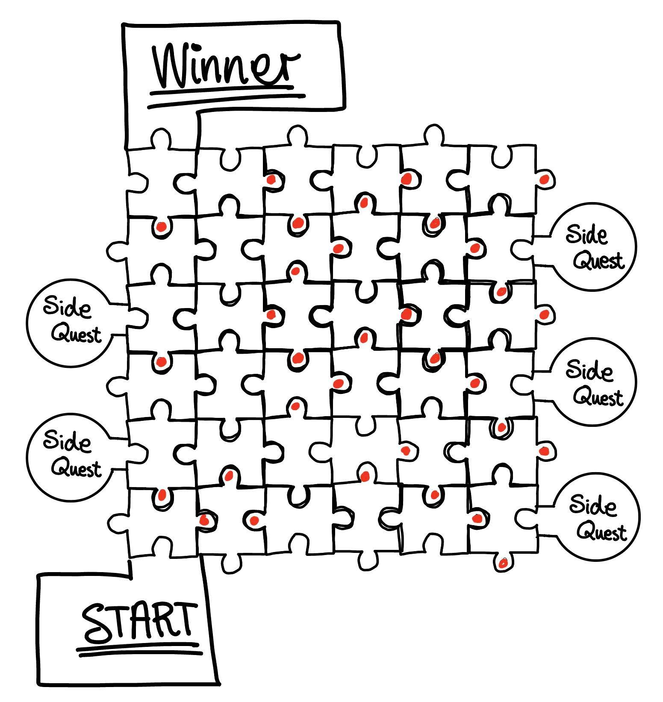

Project 1
The making of this website with HTML
Þegar verkefnið lá fyrir hittumst við allar saman og fórum aðeins yfir forsendur okkar allra og því sem við vildum fá útúr verkefninu. Við vorum strax sammála um að fræsa frekar en að gera mót. Ástæðan fyrir því var sú að við vildum framleiða hlut sem við gætum allar séð fram á að nota og höfðum byrjað ferlið á að skoða hin ýmsu húsgögn og vorum því komnar mun lengra í að skoða fræsingu heldur en mót og sáum alls kyns tækifæri í henni. Önnur forsenda sem við settum okkur á fyrsta fundi var að við vildum ekki aðeins fræsa út útlínur hlutar heldur líka að skoða hvernig hægt væri að gera einhverskonar skraut eða skemmtileg form á hlutinn, til að skoða mismunandi stillingar á fræsinum. Helga stofnaði trello workspace fyrir okkur. Þar sendum við inn þær hugmyndir sem við höfðum. Sem dæmi má nefna útileguborð fyrir tvo, blómabott, sófaborð, hillu og vegglistaverk.
Að lokum ákváðum við að búa til borðspil sem hægt væri að taka með sér í partý en okkur fannst vera vöntun á skemmtilegum íslenskum spilum fyrir vinahópa í partýum. Við settum fram nokkrar kröfur á það hvernig spilið ætti að vera. Þær voru eftirfarandi:
Í fyrstu vorum við mjög uppteknar af skilyrðum 3 og 4. Við vildum búa til slönguspil með púslkubbum sem hægt væri að raða upp á mismunandi hátt og þannig breyta uppbyggingu spilsins. Þetta tekur lítið pláss í geymslu og því auðvelt að taka með sér í partý. Eftir smá umhugsun fannst okkur þessi hönnun og einföld, það væri hægt að nýta laserskera til að búa þetta spil til. Af þeim ástæðum ákváðum við að skipta aðeins um stefnu.
Við fórum að leita að hugmyndum á netinu og fengum innblástur úr nokkrum spilum sem við nýttum í lokahönnunina okkar. Spilið sem gaf okkur mestan innblástur heitir Drink Palooza, kynningarmyndband af því má finna hér.
Spilið er innblásið af flöskustút. Spilaborðið er hringlaga með 20 reitum sem dreifa sér jafnt á ystu brún borðsins. Það er flaska í miðjunni sem leikmaður snýr og hann þarf að gera það sem stendur á reitnum sem flaskan lendir á. Allir leikmenn fá í hendurnar umbúðir af sixpack og markmiðið er að safna sex flöskum í sixpack’inn. Leikmenn fá flöskur þegar þeir gera það sem stendur á reitunum sem þeir lenda á. Á miðju borðsins er glas (e. Community cup) sem leikmenn þurfa að hella í ef þeir lenda á ákveðnum reitum. Svo eru reitir þar sem leikmenn þurfa að drekka sopa úr glasinu og sá sem tapar spilinu þarf að drekka úr öllu glasinu.
The making of this website with HTML

Design a press fit model and print using a laser cutter

Design a 3D model and print it using a 3D printer
If there are any questions or concerns, please reach out!